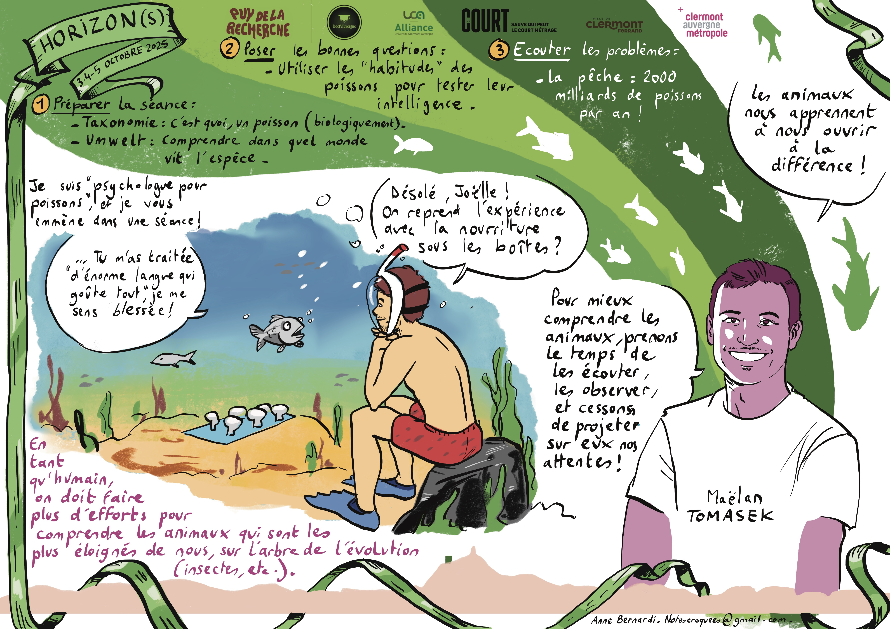
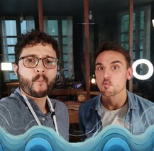
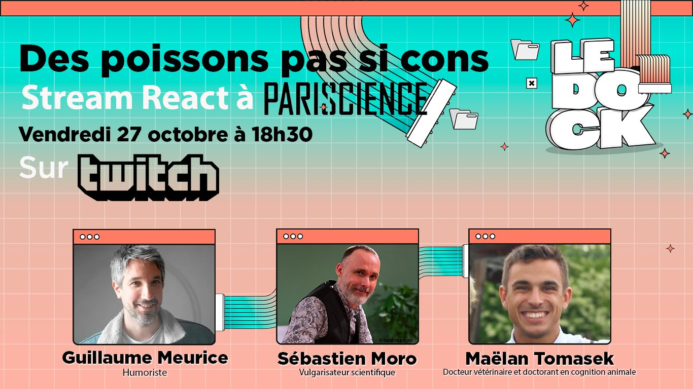

Ma médiation scientifique
Parce que la science est faite pour être partagée, je suis très impliqué dans la médiation scientifique. Je pense que partager la science avec un large public est l’une des missions les plus importantes d’un chercheur : à la fois pour faire connaître mes recherches et pour développer l’empathie envers les animaux que j’étudie.
Des podcasts aux événements en direct, en passant par les réseaux sociaux et les conférences grand public, j’essaie de faire connaître la cognition animale — et la science plus largement — au plus grand nombre.
N’hésitez pas à me contacter !
Actualités
DÉCEMBRE 2025
📻️🧠 PODCAST - PRINCIPES FONDAMENTAUX
J'ai été invité sur le podcast "Principes Fondamentaux" pour discuter en profondeur de l'intelligence animale. Merci beaucoup à Alexandre Penot pour cet excellent moment et ses questions très intéressantes !
Découvrez la vidéo ou écoutez l'épisode ci-dessous !
NOVEMBRE 2025
🎤🐠 CONFÉRENCE PUBLIQUE - PUY DE LA RECHERCHE
Cette année, j'ai participé au Puy de la Recherche, un événement de communication scientifique organisé par les doctorant·es de la région du Puy de Dôme pour diffuser l'excellente recherche réalisée dans leurs universités.
Et en petite surprise, la talentueuse Anne Bernardi était là pour dessiner en direct nos interventions. Découvrez mon dessin ci-dessous ! Merci beaucoup à elle pour ce travail et merci aux organisateurices de l'événement.

JUIN 2025
🏆️ 2ÈME PLACE - MA THÈSE EN 180 SECONDES
Après plusieurs manches de compétition, je suis enfin arrivé en finale nationale de Ma Thèse en 180 secondes, où j'ai eu l'honneur de présenter ma recherche devant un jury et une audience en direct. Je suis ravi d'avoir remporté le 2ème Prix du Jury à la finale nationale, ainsi que le 1er Prix du Jury, le Prix du Public et le Prix des Lycéens à la finale locale à Clermont-Ferrand !
Regardez la vidéo pour 3 minutes de communication scientifique amusante (et, espérons-le, informative) ! Libérez votre Jérôme intérieur !!
OCTOBRE 2024
💻️🐟️ LIVE YOUTUBE - CERVELLE D'OISEAU
Quelle plaisir de participer à ce live YouTube avec l'incroyable vulgarisateur scientifique Sébastien Moro (je suis fan !).
Regardez la vidéo pour en découvrir plus sur l'intelligence des poissons et voir des vidéos inédites de ma recherche sur les poissons dans leur milieu naturel, en plongée.
OCTOBRE 2024
📻️🧜 PODCAST - SAVANT SACHANT CHERCHER
Quel honneur d'être interviewé pour le fabuleux podcast "Savant Sachant Chercher"!
Nous avons eu l'opportunité de discuter d'intelligence animale et d'intelligence des poissons de manière très légère et informative. Merci encore à l'équipe de Science Infuse pour leur invitation!
Écoutez sur le site web →
OCTOBRE 2023
📺️🐠 LIVE TWITCH POUR ARTE
J'ai eu le plaisir d'être invité par Arte France en tant qu'expert pour commenter leur nouveau documentaire "Les poissons, pas si cons".
Accompagné par Sébastien Moro, un excellent vulgarisateur scientifique, l'humoriste et la voix-off du documentaire, Guillaume Meurice, et guidés par l'extraordinaire Marie de La Boîte à Curiosités, nous avons discuté du documentaire en détail (et en blagues !). C'était génial !
Regarder la retransmission ici (le lien peut avoir expiré) →
Sélection d’interventions
Ma Thèse en 180 secondes (2025)
2ème prix du jury à la finale nationale, 1er prix du jury, prix du public et prix des lycéens à la finale locale. Voir sur YouTube →
Échappées inattendues du CNRS (Octobre 2025)
Conférence publique lors de la fête de la Science sur le thème "Sommes-nous vraiment intelligents ?" Regardez le programme →
"Loin des yeux, loin du cœur… de l'océan : changer de regard sur les poissons" (2025)
Article de vulgarisation sur le bien-être des poissons pour Ethosph'R. Lire l’article →
Congrès France Universités — Sciences & Société (2025)
Intervenant pour une table-ronde discutant l'importance de la communication scientifique pour les jeunes chercheur·ses. Regardez le programme →
Puy de la Recherche (2025)
Conférence publique pour le Puy de la Recherche, un événement pour partager la recherche avec le grand public dans la région du Puy de Dôme.
Podcast Principes Fondamentaux (2025)
Podcast approfondi pour discuter de l'intelligence des poissons. Voir sur YouTube →
Live YouTube avec Sébastien Moro (2025)
2 heures de discussions sur l'intelligence des poissons et mes nouvelles recherches montrant que les poissons peuvent reconnaître des plongeurs. Voir sur YouTube →
Création de contenu pour le compte Instagram de Ma Thèse en 180 secondes France (2025)
Création de contenu amusant directement depuis le terrain en Corse! Voir les stories →
"Pas con le poisson" — Podcast Savants Sachant Chercher (2024)
Discussion sur la cognition des poissons et mes propres recherches. Écouter →
"Les poissons, pas si cons" — Live sur le Twitch d'Arte France (2023)
Expert invité pour commenter un documentaire Arte sur l'intelligence des poissons. Voir sur YouTube →
Table ronde sur le bien-être des animaux d'élevage — Ethosph'R, Strasbourg (2023)
Expert sur le bien-être des poissons d'élevage.
Table ronde — Festival Pariscience (2023)
Expert lors d'une table ronde publique pour la transmission du documentaire Arte "Des poissons, pas si cons".